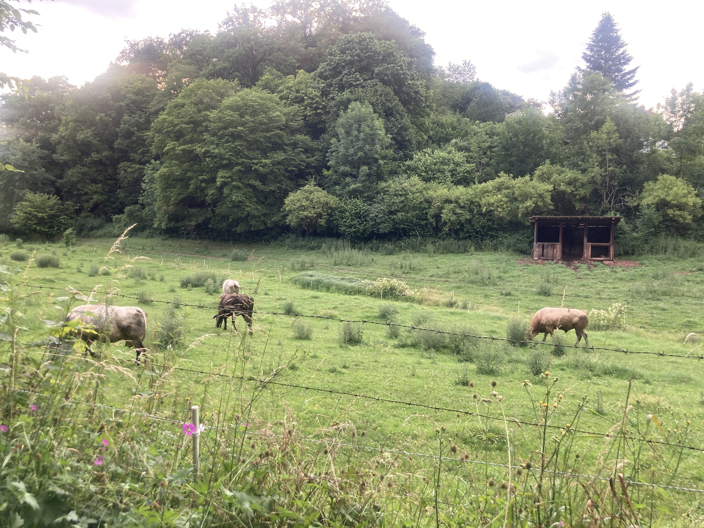
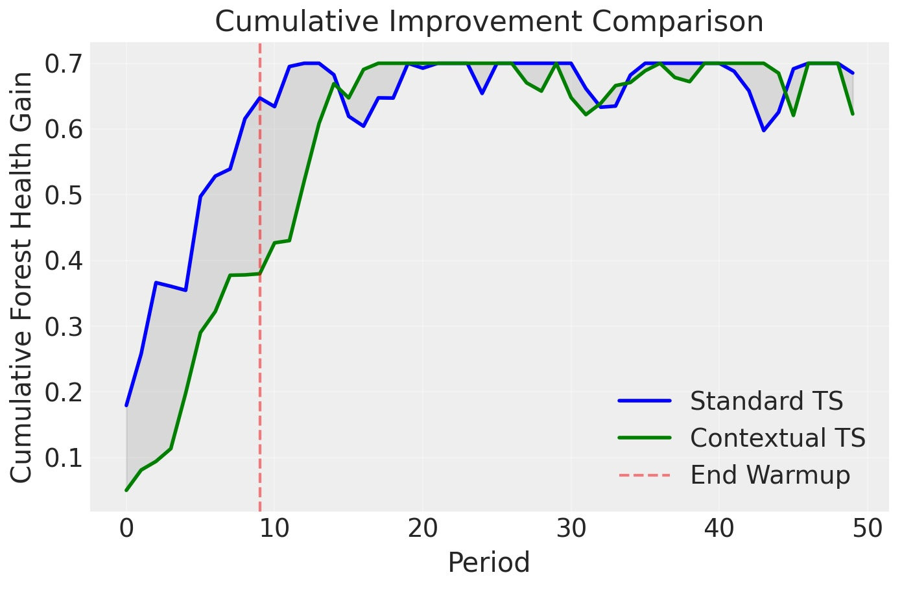
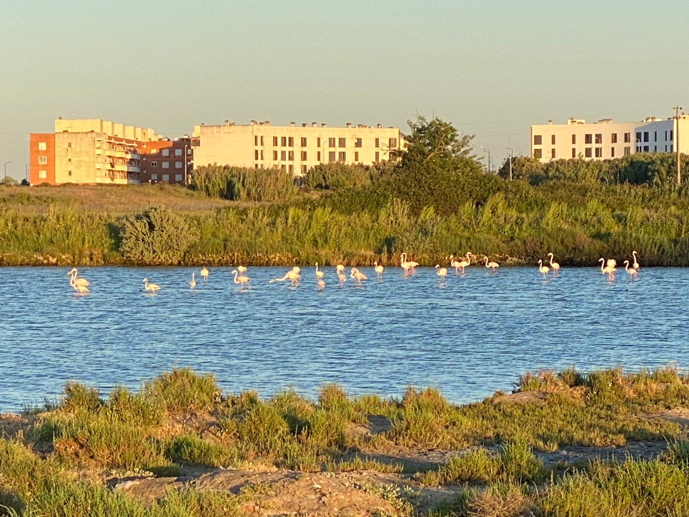
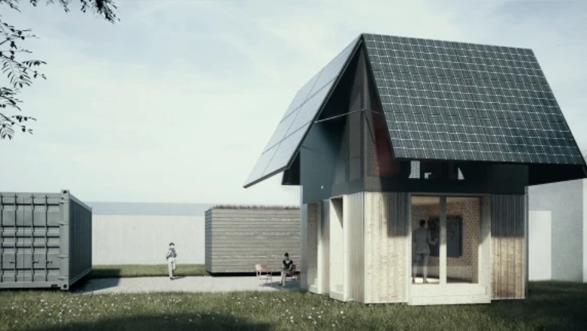

Research
Sustainable Financial Infrastructure for Nature
Regions differ considerably in their financial infrastructures for funding and financing nature conservation, sustainable land management and ecosystem restoration. In the EU, nature has predominantly been supported through public funding, subsidies, promotional banks and donations. The US, for instance, combines a diverse range of thematic and local public and private instruments, including carbon markets, regulatory compensation mechanisms such as wetland mitigation banking and species conservation banking, local payments for ecosystem services, public conservation funding, municipal bonds and water-related financing mechanisms. These differences are partly rooted in the structure of financial systems and institutions more broadly.
I am interested in what sustainable financial infrastructure for nature could look like in a particular region or context, taking account of existing conditions and opportunities for future development. Which financing instruments, vehicles and pathways are financially and economically viable, environmentally and socially sustainable, and capable of operating over the long term? How can they be connected, and which combinations hold potential for transformative change?
The role that thematic nature instruments such as nature credits play in the wider finance landscape is part of this research. I am interested in their role as instruments making nature measurable and investable as a distinct use-of-proceeds category in financing and capital allocation decisions, and in combining revenues from nature with other revenue streams (Link to preprint on Nature credits as co-allocation and co-financing instruments in environmental policy and nature positive business and finance ).


Decision Intelligence and Adaptive Learning
Safeguarding the Earth’s natural resources and biodiversity is a collective-action problem across governance levels – a challenge that does not resolve once through agreement but which continually re-emerges in a changing world. I am interested in how Bayesian and sequential models and adaptive learning can support decision-making and in how dynamic ecological, governance and economic or financial processes can be modelled jointly over time. This includes methodological work on how evidence is updated, how different types of uncertainty can be represented explicitly, and how multi-agent world models could support decision-makers in integrating and consolidating evidence and exploring suitable agreements, financing mechanisms and governance arrangements for conservation, sustainable management and restoration over time.
Together with Dr. Juan Camilo Orduz, I am working on a Bayesian model for forest investment, combining multiple agents with differing preferences, and sequential evaluation with Thompson sampling to compare alternative incentive and financing mechanisms over time (Find the poster abstract in the StanCon 2026 abstract book ). More broadly, I am interested in adaptive learning, state-transition models and decision intelligence for environmental and sustainability applications.
Biodiversity Impact Avoidance
Incentivizing avoidance of negative impacts on biodiversity when planning new developments is a topic we examine in a subgroup of the IUCN Impact Mitigation and Ecological Compensation thematic group . Avoidance of negative impacts on species and ecosystems is widely seen as the most effective stage of the mitigation hierarchy, before reducing, restoring and compensating for impacts that have already occurred. Increasingly, financial, institutional and social drivers are being developed that incentivize and enhance how the potential for avoiding impacts on species and ecosystems in the first place, and for preserving ecological, economic and asset value, can be used and valued when planning and designing projects and choosing their locations. We provide decision support to maximize and make use of planning optionality for the avoidance of negative impacts.

Climate- and Nature-related Risks and Resilience
Nature-based solutions can be used as risk mitigation and adaptation measures in project finance, reducing a variety of risks faced by investors. How the risk-reducing, risk-management, adaptation and resilience functions of ecosystem services and biodiversity – species and ecosystems – can be economically valued has been a long-debated topic in ecological economics. In a paper, I examined how the carbon-biodiversity nexus in forestry can be leveraged as a risk mitigation measure in carbon projects (Link to preprint on Complementing carbon credits from forest-related activities with biodiversity insurance and resilience value ).
While nature- and climate-related risks, both to the real economy and financial systems, are increasingly being assessed and approaches to their modelling are becoming more formalized and regulated, assessing and valuing risk responses and relating them to financial risk assessment, risk management and asset valuation still demands more effort and capacity.
Sustainable Finance within the Bioeconomy
How to integrate nature and climate strategy with other economic, financial, social and sustainability objectives in a business and finance context, and how to build investable and scalable sustainability solutions, including their value chains, across sectors including those producing and trading bio-based and circular products, is one of the major challenges of bioeconomies.
While working in circular and timber-based construction with the built environment consultancy WoodenValley gGmbH in Stuttgart, Germany, from 2024 to 2026, one area of work was how to account for carbon reductions through the use of timber and bio-based construction materials as well as for sustainability benefits from circular solutions and residual value models in real estate, and how to account for these benefits economically and financially (Link to policy brief on Classifying Climate Benefits and Addressing Trade-offs of Timber Use in Buildings for Voluntary Carbon Markets and the EU Carbon Removal Certification Framework ).
While the EU Taxonomy and disclosure frameworks such as the TCFD/TNFD, GRI, SFDR and CSRD provide structured frameworks for the assessment of business and financial activities, aligning the real economy and the financial sector in terms of sustainable value creation, capture and retention at scale remains a work in progress.

Market Rules and Sustainable Finance for Social and Cultural Sustainability Objectives
In a world characterised by widely differing and competing visions of the future, market rules and sustainable finance frameworks play an increasingly important role in defining the boundary conditions of decision spaces. They are essential for safeguarding and preserving not only environmental, but also social and cultural value, while supporting livelihoods, reducing poverty and inequalities, and preventing conditions that contribute to violent conflict. As resources are increasingly at risk of being allocated to and invested in future scenarios that are incompatible with maintaining sustainable living conditions over the long term and damaging to local livelihoods in the shorter term, different social, economic and cultural systems may need to make their own conditions of possibility explicit, evaluate them, and selectively preserve those that enable their continued existence and coexistence with others.